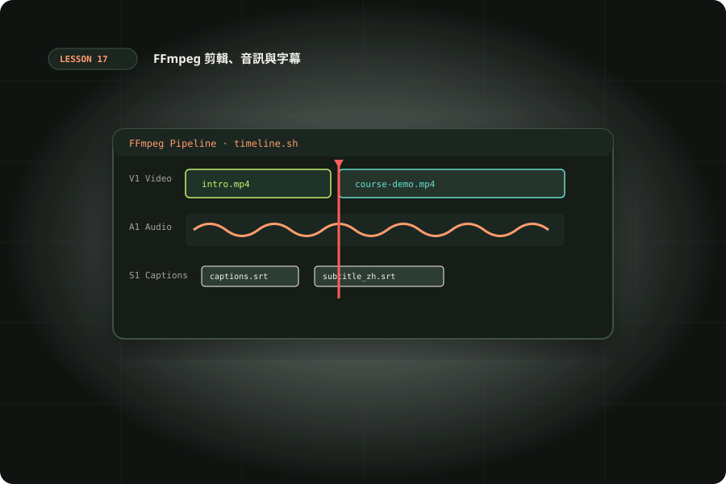

用 Codex 與 FFmpeg 剪輯影片
先量測素材，再完成精準剪輯、裁切、串接、音訊與字幕，保留可以重跑的命令。

準備與學習成果
開始前準備
- 完成基礎 Codex 任務交辦與本機工具單元
- 能在練習資料夾執行命令，理解輸入檔與輸出檔
完成後你能
- 完成八秒合成素材與四秒方形短片
- 能說明重編碼與 stream copy 的切點差異
- 交付音訊或字幕變體與原始命令
- 用 ffprobe 與播放檢查交付證據
兩小時實作安排
時間包含閱讀、操作、修正與驗收；不是純閱讀時間，也不是工具執行時間保證。
Codex 當剪輯助理：先建立剪輯決策表
本單元把八秒合成素材剪成四秒方形短片，不需要下載網路影片。Codex 可以讀取檔案、安排 ffprobe 與 ffmpeg 命令、解析輸出、調整流程；實際編解碼由 FFmpeg 完成。交付的價值是影片、可重跑腳本與驗收資料三者一致。
先寫 edit-plan.md，指定來源、原始時間區間 [2,6)、輸出 360×360、30fps、保留音訊、不覆寫原檔。時間區間的終點不包括第六秒；四秒指輸出時長，不是「從第 2 秒到第 4 秒」。素材如果有旋轉、可變幀率或不從零開始的時間戳，須額外確認。
避免交辦「剪精彩一點」而沒有看過內容。先讓 Codex 列出可驗證技術條件；敘事與取捨由人類看畫面決定。你可以提供逐段文字表，例如「2–6 秒作主段，音量減半，末尾不要黑畫面」，然後讓代理產生命令與證據。
環境與 ffprobe：知道輸入才決定輸出
先在本機確認安裝；macOS 可用套件管理器安裝 FFmpeg，其他平台依官方下載連結選擇建置。教材命令以 Bash 與 FFmpeg 近代版本為基準，功能是否存在取決於本機編譯選項。
ffmpeg -version
ffprobe -version
ffmpeg -hide_banner -encoders
ffmpeg -hide_banner -filters
ffprobe -v error -show_streams -show_format -of json input.mp4ffprobe 的 JSON 可查看 codec_type、codec_name、width、height、avg_frame_rate、sample_rate 與 duration。詳細參數見 ffprobe 官方文件。對沒有音訊的來源，不能強制 -map 0:a:0；可改為可選映射 -map 0:a:0?，並在報告註記沒有音訊。
練習前建立新資料夾，使用普通檔名；把下載腳本與字幕放一起。確認磁碟容量，再保存版本到 report.md。版本與編譯差異能解釋為什麼另一台機器沒有 libx264 或 subtitles，不能只把失敗歸因於 Codex。
精準裁切與 stream copy 的取捨
-ss 放在 -i 之前是輸入定位；搭配重編碼通常利用 accurate seek 處理。-t 指輸出持續時間。stream copy 複製壓縮封包，速度快、少一次壓縮，切點可能受關鍵幀與時間戳影響；需要精準畫面時先選重編碼。選項位置與語意見 FFmpeg CLI 文件。
# 本單元的精準輸出：2 秒起，長 4 秒
ffmpeg -n -ss 2 -i source.mp4 -t 4 -c:v libx264 -pix_fmt yuv420p -c:a aac clip.mp4
# 快速草稿：請人工檢查切點，不能保證同樣逐幀結果
ffmpeg -n -ss 2 -i source.mp4 -t 4 -c copy draft.mp4反例是要求 resize 同時 -c:v copy；濾鏡要處理解碼後畫面，不能直接複製原視訊封包。還有把 -to 6 與 -t 6 混用：先明確定義來源座標與輸出時長，用一個時長選項減少歧義。
重編碼會耗 CPU 且可能改變畫質。先短段預覽再跑全片，保存來源不覆寫。CRF、preset、硬體編碼可在完成基本驗收後比較；沒有實際測量，不宣稱某參數在所有機器都最快或最清晰。
畫面：裁切、縮放與保持比例
下面來源是 1280×720，取中央 720×720：水平起點 (1280−720)/2=280，垂直起點為 0，再縮至 360×360。這是本課特定尺寸的計算，不要直接套到直式手機影片。裁切會失去邊緣；若主體在旁邊，應改 x 值或選加邊框。
ffmpeg -n -i clip.mp4 -vf 'crop=720:720:280:0,scale=360:360' -c:v libx264 -pix_fmt yuv420p -c:a copy square.mp4
# 保持全畫面，放進 640x360 畫布
ffmpeg -n -i clip.mp4 -vf 'scale=640:360:force_original_aspect_ratio=decrease,pad=640:360:(ow-iw)/2:(oh-ih)/2,setsar=1' -c:v libx264 -pix_fmt yuv420p -c:a copy fitted.mp4crop、scale、pad 與 setsar 參考 官方濾鏡文件。本案例維持偶數尺寸與 yuv420p 便於常見播放器使用。預覽時請看主體是否被切掉、圓形是否被拉扁，而不只驗證解析度。
把技術裁切與內容裁切分開記錄：前者能算出座標，後者需要看見畫面。Codex 若無影片檢視能力，可先抽幀供你確認；不能因命令成功就宣稱人物構圖合理。
串接、音訊與字幕的具體做法
串接前把兩段統一為相同尺寸、幀率、編碼和音訊格式。簡單且相容的素材可用 concat demuxer；在 list.txt 每行寫 file 與相對路徑，路徑相對於清單位置。練習用同一個 clip 兩次驗證八秒輸出。
# list.txt 內容（與 clip.mp4 放在同一資料夾）
file 'clip.mp4'
file 'clip.mp4'
# 執行
ffmpeg -n -f concat -safe 1 -i list.txt -c copy joined.mp4
# 音量減半，需要重編音訊
ffmpeg -n -i clip.mp4 -c:v copy -af 'volume=0.5' -c:a aac quieter.mp4
# 移除音訊
ffmpeg -n -i clip.mp4 -c:v copy -an silent.mp4
# 燒入字幕：需要包含 libass 的建置，從字幕所在目錄執行
ffmpeg -n -i clip.mp4 -vf 'subtitles=captions.srt' -c:v libx264 -pix_fmt yuv420p -c:a copy captioned.mp4下載 練習字幕。字幕時間以剪後影片零秒為起點，英文樣本避免依賴特定中文字型；繁中字卡要確認系統字型。燒入字幕變成畫面像素，修改需重做；軟字幕則保留可切換軌道，但相容性依播放器而異。
串接不同編碼來源不能只碰運氣 -c copy。請先標準化再串接，或用 concat filter 重編碼。交付前聽首尾與接點，確認音訊沒突然變大、沒有短黑畫面；這些仍需播放檢查。
離線實作：合成、裁切、探測與變體
下載 lab.sh 到練習資料夾，執行 bash lab.sh。它用 testsrc2 畫面與 sine 音訊造出八秒素材；沒有網路輸入。-n 防止覆寫；重跑請改用新的練習資料夾或先保存原產物。命令會生成 source、clip、square 與 report.json。
#!/usr/bin/env bash
set -euo pipefail
mkdir -p output
ffmpeg -hide_banner -loglevel error -n -f lavfi -i 'testsrc2=size=1280x720:rate=30' -f lavfi -i 'sine=frequency=440:sample_rate=48000' -t 8 -c:v libx264 -pix_fmt yuv420p -c:a aac output/source.mp4
ffmpeg -hide_banner -loglevel error -n -ss 2 -i output/source.mp4 -t 4 -map 0:v:0 -map 0:a:0 -c:v libx264 -pix_fmt yuv420p -c:a aac output/clip.mp4
ffmpeg -hide_banner -loglevel error -n -i output/clip.mp4 -vf 'crop=720:720:280:0,scale=360:360' -c:v libx264 -pix_fmt yuv420p -c:a copy output/square.mp4
ffprobe -v error -show_streams -show_format -of json output/square.mp4 > output/report.json
python3 - <<'CHECK'
import json
from pathlib import Path
r=json.loads(Path('output/report.json').read_text())
v=next(s for s in r['streams'] if s['codec_type']=='video')
assert (v['width'],v['height'])==(360,360)
assert abs(float(r['format']['duration'])-4)<0.15
assert any(s['codec_type']=='audio' for s in r['streams'])
print('PASS: 360x360, approximately 4 seconds, audio present')
CHECK主要任務完成後，增加 quieter.mp4 與 captioned.mp4，再做一次 joined.mp4。把每個產物的預期時間與解析度寫在表格。每次只加入一種變體，避免同時出現音訊、字幕與串接問題而難以定位。
驗收與排錯：把退出碼轉成證據
腳本驗證尺寸、四秒容差與音訊存在；AAC 封裝與時間基準可能帶來小差異，所以不要要求 duration 浮點值完全等於 4。30fps、四秒理想畫面數為 120，可再用 ffprobe -count_frames 讀 nb_read_frames；遇到可變幀率要用實測而非四捨五入。
「Unknown encoder」檢查編譯選項；「No such filter」查看 -filters；「Invalid data」先確認來源能由 ffprobe 讀取。字幕找不到，檢查工作目錄、相對路徑與 libass；中文字幕方框要確認字型。沒有音訊時檢查映射，影像被拉扁時檢查比例與 SAR。
最後看首幀、中段、末幀並播放含聲版本。報告分成機器檢查通過、人工檢查通過與尚未檢查；只可交付確實完成的項目。若工作流程會處理客戶素材，先複製到工作資料夾、保留原檔雜湊與剪輯計畫；產物對應到明確版本，才方便改稿。
情境判斷
驗收與完成
官方與第一手來源
範例與操作安排由本站整理。查證日期：2026-10-10；版本、帳號與本機環境不同時，請核對原始文件。